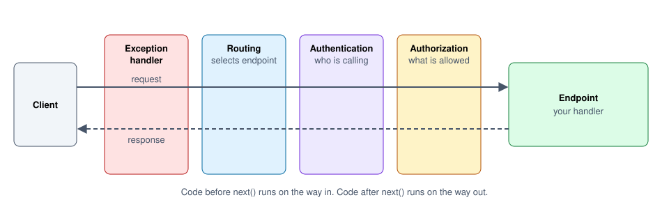

Middleware Pipeline
Middleware is a component that handles a request, optionally calls the next component, and can then act on the response. Components form a chain called the pipeline. Django has the same concept, so the main new detail is the required order of the built-in components.
The code on this page has not been compiled or run yet. It targets .NET 11 and C# 15.
1. The Mental Model

Each component has code before and after the call to next:
app.Use(async (context, next) =>
{
var started = TimeProvider.System.GetTimestamp();
await next(context);
var elapsed = TimeProvider.System.GetElapsedTime(started);
app.Logger.LogInformation("{Path} took {Ms} ms",
context.Request.Path, elapsed.TotalMilliseconds);
});Code before next runs on the way in. Code after next runs on the way out.
2. Use, Run and Map
| Method | Behaviour |
|---|---|
app.Use |
Runs and can call the next component |
app.Run |
Ends the pipeline |
app.Map("/path", ...) |
Creates a separate branch for a path prefix |
app.MapWhen(predicate, ...) |
Creates a separate branch for a condition |
app.UseWhen(predicate, ...) |
Adds a conditional branch that rejoins the main pipeline |
app.UseWhen(
context => context.Request.Path.StartsWithSegments("/api"),
branch => branch.UseMiddleware<ApiKeyMiddleware>());A component short-circuits the pipeline when it does not call next. Authorization does this when it returns 403.
3. The Required Order
Use this order for a typical API:
var app = builder.Build();
app.UseForwardedHeaders(); // 1. Restore the client IP and scheme behind a proxy
app.UseExceptionHandler(); // 2. Catch failures from everything below
app.UseHsts(); // 3. Send the HSTS header in production
app.UseHttpsRedirection(); // 4. Redirect HTTP to HTTPS
app.UseRouting(); // 5. Select the endpoint
app.UseCors(); // 6. Answer cross-origin requests
app.UseAuthentication(); // 7. Identify the caller
app.UseAuthorization(); // 8. Check what the caller may do
app.UseRateLimiter(); // 9. Apply limits that can depend on the user
app.UseOutputCache(); // 10. Serve cached responses
app.MapItems(); // Endpoints
app.Run();| Rule | Reason |
|---|---|
| Exception handler goes early | It only catches exceptions from later components |
| Forwarded headers go first | Later components need the real scheme and client IP |
| Routing goes before CORS and auth | They read metadata from the selected endpoint |
| Authentication goes before authorization | Authorization needs the identity |
| Authorization goes before output cache | Unauthorized callers must not receive cached data |
4. Write a Middleware Class
Use a class for anything larger than a few lines. This example adds a correlation ID to each response and log entry.
public sealed class CorrelationIdMiddleware(
RequestDelegate next,
ILogger<CorrelationIdMiddleware> logger)
{
private const string Header = "X-Correlation-ID";
public async Task InvokeAsync(HttpContext context)
{
var id = context.Request.Headers[Header].FirstOrDefault()
?? Guid.NewGuid().ToString("N");
context.Response.OnStarting(() =>
{
context.Response.Headers[Header] = id;
return Task.CompletedTask;
});
using (logger.BeginScope(new Dictionary<string, object> { ["CorrelationId"] = id }))
{
await next(context);
}
}
}Register it in the pipeline:
app.UseMiddleware<CorrelationIdMiddleware>();5. Middleware and Lifetimes
A convention-based middleware class is created once, when the app starts. It behaves like a singleton. Do not inject a scoped service into its constructor. Add the scoped service to InvokeAsync instead:
public sealed class TenantMiddleware(RequestDelegate next)
{
public async Task InvokeAsync(HttpContext context, TenantContext tenant)
{
tenant.Id = context.Request.Headers["X-Tenant"].FirstOrDefault();
await next(context);
}
}The container resolves TenantContext for each request.
6. The Response Has a Start Point
Headers go to the client with the first body bytes. After that point, you cannot change the status code or the headers.
await next(context);
if (!context.Response.HasStarted)
{
context.Response.Headers["X-Handled"] = "true";
}Use context.Response.OnStarting to set a header just before the response starts. The correlation ID example uses this method.
7. Middleware or Endpoint Filter?
| Need | Use |
|---|---|
| Applies to all requests | Middleware |
| Needs the raw request before routing | Middleware |
| Applies to one endpoint or group | Endpoint filter |
| Needs the bound handler arguments | Endpoint filter |
items.MapPost("/", CreateItem)
.AddEndpointFilter(async (context, next) =>
{
var result = await next(context);
return result;
});8. Compared With Django
| Django | ASP.NET Core |
|---|---|
MIDDLEWARE list in settings |
Calls in Program.cs |
get_response(request) |
await next(context) |
process_exception |
Exception handler middleware |
CorsMiddleware from django-cors-headers |
Built-in UseCors |
| Decorator on a view | Endpoint filter |
9. Common Mistakes
| Mistake | What goes wrong | Do this instead |
|---|---|---|
UseAuthorization before UseAuthentication |
Every user looks anonymous | Follow the order in section 3 |
| Exception handler added late | Earlier failures return an empty 500 | Add it near the top |
Writing a body and then calling next |
Later components fail or corrupt the response | Write the body or call next, not both |
Setting headers after next |
The app throws because the response started | Use OnStarting |
| Scoped service in a middleware constructor | Captive dependency | Inject it into InvokeAsync |
| Reading the body without buffering | Later components see an empty body | Call context.Request.EnableBuffering() |